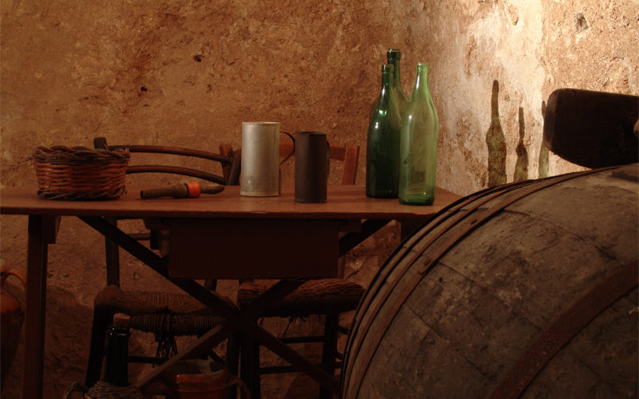

IL MUSEO
Come Nasce
La storia del Museo di Sammichele, è lo specchio della storia politica del paese, dove tutte le
amministrazioni si sono misurate con il
più alto esempio di progettualità culturale locale. La scientificità del lavoro, l’alta professionalità e la
passione di Dino Bianco hanno
permesso la ricerca e il recupero di un patrimonio storico documentale di reperti poveri, ma ricchi di
tempo, con l’intento di favorire lo
sviluppo del senso di appartenenza ad una civiltà spesso nostalgicamente rievocata. Nello spazio dell’antico
Castello Caracciolo è
narrata e rivissuta la storia secolare della nostra comunità. Circa cinquemila oggetti rivivono nel presente
attraverso fonti scritte e
orali, foto d’epoca, disegni e tavole di commento.
Ciascun oggetto, con l’attuale allestimento, che risale al 2010, è stato ricollocato nel suo contesto
geografico, economico, storico,
sociale, linguistico e produttivo attraverso parole e immagini che racchiudono la simbologia e ritualità
della vita contadina. Il percorso
espositivo è strutturato su tre piani, e si snoda attraverso 15 sale, nelle quali sono ricostruiti i più
significativi ambienti domestici e
lavorativi, accanto ad oggetti ordinati per tipologia, nella comune certezza che è un dovere imprescindibile
quello di mettere a
disposizione delle future generazioni un’immagine reale della cultura dei nostri padri. Gli oggetti
propongono da territorio limitrofo e
rievocano i valori e il fascino del mondo contadino, fondamento della nostra cultura e del nostro progresso.
Sala per sala il visitatore
compie un viaggio nel tempo alla ricerca delle comuni radici, quelle legate alla cultura della civiltà
contadina, rivivendo i vari momenti
della vita di uomini che ponevano il loro ingegno nell’affrontare le difficoltà di ogni giorno.

Il Museo
La storia del Museo di Sammichele, è lo specchio della storia politica del paese,
dove tutte le amministrazioni si sono misurate con il più alto esempio di
progettualità culturale locale. La scientificità del lavoro, l’alta professionalità e
la passione di Dino Bianco hanno permesso la ricerca e il recupero di un
patrimonio storico documentale di reperti poveri, ma ricchi di tempo, con
l’intento di favorire lo sviluppo del senso di appartenenza ad una civiltà spesso
nostalgicamente rievocata. Nello spazio dell’antico Castello Caracciolo è
narrata e rivissuta la storia secolare della nostra comunità. Circa cinquemila
oggetti rivivono nel presente attraverso fonti scritte e orali, foto d’epoca,
disegni e tavole di commento. Ciascun oggetto, con l’attuale allestimento, che
risale al 2010, è stato ricollocato nel suo contesto geografico, economico,
storico, sociale, linguistico e produttivo attraverso parole e immagini che
racchiudono la simbologia e ritualità della vita contadina.

Il percorso espositivo è strutturato su tre piani, e si snoda attraverso 9 sale, nelle quali sono ricostruiti i più significativi ambienti domestici e
lavorativi, accanto ad oggetti ordinati per tipologia, nella comune certezza che è un dovere imprescindibile quello di mettere a disposizione
delle future generazioni un’immagine reale della cultura dei nostri padri. Gli oggetti propongono da territorio limitrofo e rievocano i valori e il
fascino del mondo contadino, fondamento della nostra cultura e del nostro progresso. Sala per sala il visitatore compie un viaggio nel tempo
alla ricerca delle comuni radici, quelle legate alla cultura della civiltà contadina, rivivendo i vari momenti della vita di uomini che ponevano il
loro ingegno nell’affrontare le difficoltà di ogni giorno.
Divenivano di volta in volta agricoltori, come testimoniato attraverso i cicli produttivi del grano, dell’olio e del vino, o artigiani, come rappresentato dalle botteghe del
fabbro, dello scalpellino, del mastro carradore, del sellaio e di molti altri antichi mestieri. In un’epoca dominata dal mito della macchina e dell’automazione, è difficile
rendersi conto della fatica e degli sforzi che il lavoro contadino richiedeva quando veniva svolto con la sola forza delle braccia o con l’aiuto dei miseri attrezzi quasi tutti
in legno, costruiti a mano inventati e costruiti a mano per necessità, con pazienza, perizia e soprattutto con fantasia straordinaria, in modo da alleviare gli stenti, le
fatiche e l’endemica povertà dei contadini.
A scandire la vita di questi uomini era un forte sentimento religioso ben illustrato nella sala dedicata alla religiosità popolare.
Il museo mantiene il legame con il suo territorio attraverso i reperti che ne testimoniano l’evoluzione storica e realizza, in attività di laboratorio, la vocazione didattica
che lo caratterizza sin dalla fondazione.
powered by: Marinelli Giuseppe.
section: 3b-inf.